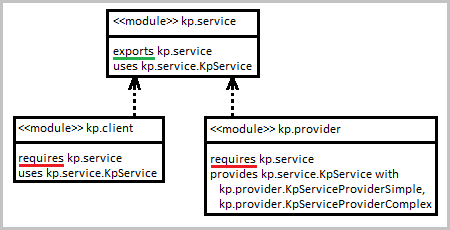
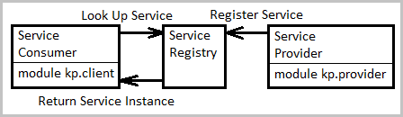
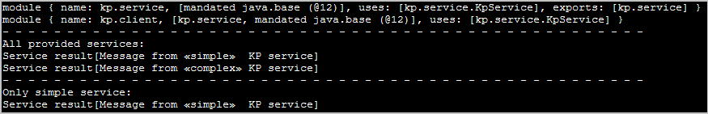

package
kp.service package
kp.provider package
kp.client
package
kp.service package
kp.provider package
kp.clientJava source code:
package
kp.service
package
kp.provider
package
kp.client
Java module declarations in module-info.java:
module
kp.service
module
kp.provider
module
kp.client

Modules
Defined the providers of a KpService implementation: KpServiceProviderSimple and KpServiceProviderComplex.

Registering and Loading Services
Actions:

 1. Launch application with "01 MVN install + Run Application.bat"
1. Launch application with "01 MVN install + Run Application.bat"
2. Launch application with "02 Create Image And Run.bat".
 It creates the run-time image with jlink and uses the generated runtime for execution.
It creates the run-time image with jlink and uses the generated runtime for execution.

First action result: console log from application run.
The KpServiceClient executes the KpService implementations: